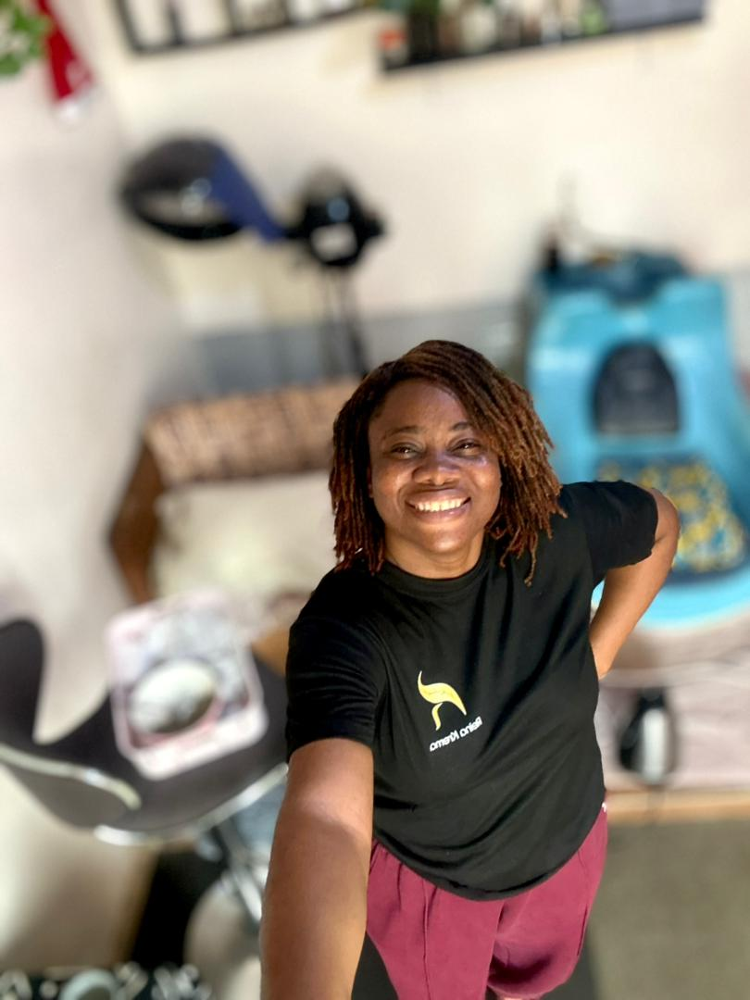

Je suis une femme passionnée par la beauté, le bien-être et la valorisation de la femme africaine. À travers ma marque REINA KREMA, j’œuvre à offrir des solutions capillaires naturelles, efficaces et adaptées à chaque type de cheveux.
Mon univers professionnel se décline autour de plusieurs activités :
